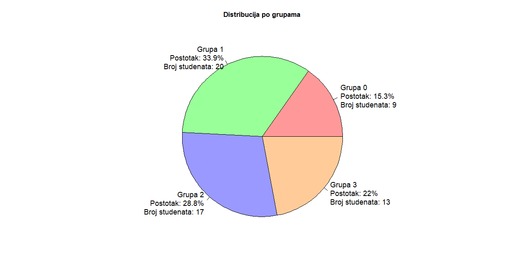
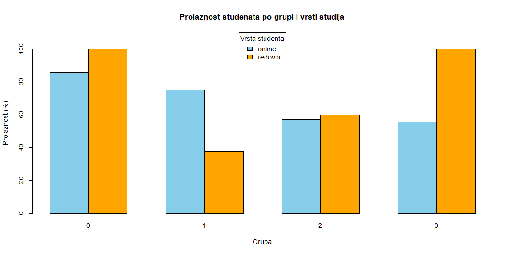
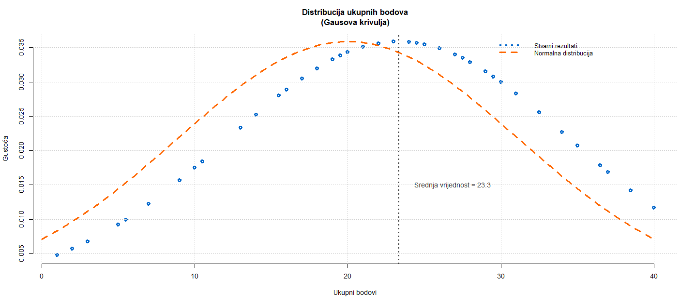
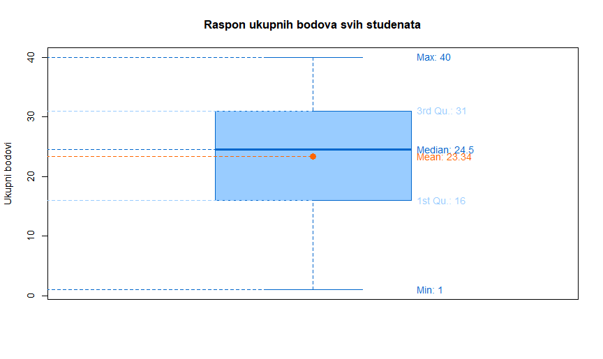

Cilj ove analize je ispitati uspješnost studenata na kolokviju iz kolegija PJS. Gdje mi je cilj odgovoriti na sljedeća pitanja:
Skup podataka nad kojim se vrši analiza se sastoji od 59 opservacija i 17 varijabli od čega ima:
2 kategorijske - nominalne:
group: grupa kolokvija dodijeljena studentu (1–4)student_type: vrsta studenta (online, redovni)15 kontinuiranih - racionalnih:
ID: jedinstveni identifikator studentatask_1 do task_14: broj bodova ostvarenih na svakom od 14 zadataka
Nema nedostajućih vrijednosti tako da ih nije potrebno čistiti.
Pretvorit ćemo kategorijske varijable (vrsta_studenta, grupa) u faktorske varijable.
Dodat ćemo dva stupca:
ukupno: zbroj svih bodova zadatakaprolaz: TRUE/FALSE ovisno o tome da li student ima barem 50% bodovaAnaliza distribucije pokazuje sljedeću raspodjelu studenata po četiri različite grupe:
| Grupa | Broj studenata | Postotak |
|---|---|---|
| 0 | 9 | 15.3% |
| 1 | 20 | 33.9% |
| 2 | 17 | 28.8% |
| 3 | 13 | 22.0% |
| Ukupno | 59 | 100% |
Grupa 1 je najbrojnija s 20 studenata, što čini 33.9% ukupnog broja. Grupe 2 i 3 imaju relativno sličnu zastupljenost (28.8% i 22.0% respektivno), dok je Grupa 0 najmanje zastupljena sa samo 9 studenata (15.3%). Ova distribucija sugerira da su studenti podijeljeni u četiri grupe nejednakih veličina, što nam govori da trenutačni način dodjeljivanja grupa nije ravnomjeran.
Grafički prikaz ove distribucije može se vizualizirati kroz pie chart koji jasno prikazuje udjele pojedinih grupa u ukupnom broju studenata.

Pie chart jasno prikazuje kako Grupa 1 zauzima najveći dio kruga (oko trećinu ukupnog broja), dok su ostale grupe proporcionalno manje, gdje je Grupa 0 ima najmanji segment.
Analiza prolaznosti studenata prikazana je prema grupi i vrsti studija (online/redovni):
| Grupa | Prolaznost (%) |
|---|---|
| 0 | 88.9 |
| 1 | 55.0 |
| 2 | 58.8 |
| 3 | 69.2 |
| Ukupno | 64.4 |
| Grupa | Tip studija | Prolaznost (%) |
|---|---|---|
| 0 | Online | 85.7 |
| 1 | Online | 66.7 |
| 2 | Online | 57.1 |
| 3 | Online | 55.6 |
| 0 | Redovni | 100.0 |
| 1 | Redovni | 37.5 |
| 2 | Redovni | 60.0 |
| 3 | Redovni | 100.0 |
| Tip studija | Prolaznost (%) |
|---|---|
| Online | 65.7 |
| Redovni | 62.5 |
| Prolaznost (%) |
|---|
| 64.4 |
Iz dobivenih rezultata vidimo da je ukupna prolaznost studenata 64.4% (online 65.7% i redovni 62.5%) što zadovoljava minimalnu prolaznost studenata od 40% te uz to i možemo vidje da obje vrste studenata imaju jednaku prolaznost.

Iz grafa se posebno ističe Grupa 0, gdje svi redovni studenti, a većina online studenata, ostvaruje prolaz, što može ukazivati na povoljne zadatke. S druge strane, Grupa 1 pokazuje znatno slabiji uspjeh kod redovnih studenata, što može zahtijevati dodatnu analizu sadržaja zadataka u toj grupi.
Za potrebu ovog pitanja napravili smo scatter plot za prikaz sortiranih podataka normalne distribucije.

Na temelju grafa, možemo usporediti stvarnu raspodjelu ukupnih bodova studenata (plave točke) s idealnom normalnom distribucijom (narančasta isprekidana linija).
Distribucija bodova ne prati u potpunosti Gaussovu krivulju:
23.3 te ne odgovara idealnoj simetriji normalne krivulje ali nije dalekoRaspodjela bodova ima obilježja normalne distribucije s odstupanjima u repovima i vrhu. Rezultati nisu savršeno normalno distribuirani, što je i za očekivati zbog specifičnih čimbenika poput: težine kolokvija, razlike u pripremljenosti, strukturi zadataka i sl.
Analiza raspona bodova svih studenata pokazuje sljedeće statističke vrijednosti:
| Statistika | Vrijednost |
|---|---|
| Min. | 1.00 |
| 1st Qu. | 16.00 |
| Median | 24.50 |
| Mean | 23.34 |
| 3rd Qu. | 31.00 |
| Max. | 40.00 |
Raspon bodova se proteže od minimalnih 1 bod do maksimalnih 40 bodova, s prosječnim rezultatom od 23.34 boda. Medijan bodova iznosi 24.50, što znači da je polovica studenata ostvarila rezultate iznad tog broja, dok je druga polovica ispod. Prvi kvartil (16.00) ukazuje na to da je 25% studenata ostvarilo rezultate ispod tog broja, dok je treći kvartil (31.00) pokazatelj da je 75% studenata imalo bolji rezultat.
Grafički prikaz ove distribucije može se prikazati kroz box plot koji jasno ilustrira raspon bodova i položaj ključnih statističkih vrijednosti.

Box plot prikazuje kako se većina bodova koncentrira u srednjem širokom rasponu (16-31), te možemo vidjeti da su studenti u prosjeku ostvarili veće bodove s obzirom na to da je interkvartilni raspon podignut.
Analiza uspješnosti studenata na kolokviju iz kolegija PJS ukazuje na to da je težina kolokvija bila dobro izbalansirana. Ukupna prolaznost od 64.6% može se smatrati zadovoljavajućom, posebno uzimajući u obzir gotovo jednaku uspješnost redovnih i online studenata, što dodatno potvrđuje pravednost pristupa ocjenjivanju.
Posebnu pažnju treba usmjeriti na Grupu 1, gdje su rezultati bili slabiji u odnosu na ostale grupe, kako bi se identificirale moguće poteškoće ili nepravilnosti u sadržaju zadataka.
Distribucija bodova donekle slijedi oblik normalne (Gaussove) krivulje, uz blagu asimetriju prema višim bodovima, što nije zabrinjavajuće jer općenito zadržava pravilnu raspodjelu.
Raspon bodova, uz medijan i prosjek blizu sredine, te blag pomak prema višim rezultatima, pokazuje da je većina studenata ostvarila srednje do više bodove, što je u skladu s očekivanjima i dodatno potvrđuje primjerenu razinu težine kolokvija.